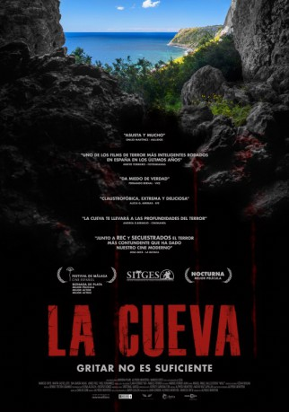

IMDB-Wertung: 5.7 / 10
IMDB-Wertung: 5.7 / 10  Metascore:
Metascore: 
Five friends go unannounced on a vacation. Soon they discover a cave entrance, which they decide to explore.
 IMDB-Wertung: 5.7 / 10 Metascore:
Five friends go unannounced on a vacation. Soon they discover a cave entrance, which they decide to explore.
Jahr: 2014
Dauer: 79 Minuten
FSK: 16
Land: Spanien Studio: Ascot Elite Entertainment GroupTonspuren:
Untertitel:
Auflösung: 1080p (1920x1080) Größe: 5601 MB
Genre: Horror
Regisseur:
Drehbuch: Javier Gullón
Soundtrack:
Darsteller:
Datei: X:\2014(G-M)\Höhle Überleben ist ein Instinkt. Keine Wahl., Die (2014, FSK16, 1920x1080).mkv seit 11.10.2017
Festplatte: HD 2013(I-Z)-2014(A-Z)
 Es gibt insgesamt 136 Filme in der Gruppe '2014(G-M)'
Es gibt insgesamt 136 Filme in der Gruppe '2014(G-M)'